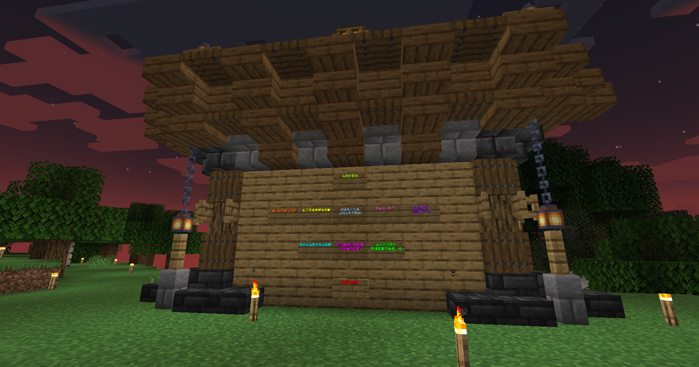

👋 嗨朋友，歡迎來到右拔伺服器，這裡是服主叡叡撰寫的文章，為了確保您了解伺服器規則以及玩法，請繼續看下去，務必加入Discord交流群喔！
這是玩家的出生點，有著一個酷酷的布告欄
Minecraft與Discord通用規則
1.禁止破壞他人財物，造成他人損失，接到舉報開罰警告乙支
2.在伺服器內禁止開啟照成遊戲不平衡的外掛被管理員抓到或玩家檢舉直接BAN
3.惡搞伺服器照成伺服器損毀，管理員抓到或玩家檢舉開罰新台幣2000元整並BAN
4.禁止影響他人遊玩體驗
5.禁止跟任何管理員或者高職位的人要求任何武器或OP
6.在使用Minecraft與Discord聊天室時請保持和樂融融的風化，禁止任何公然侮辱的言詞與妨礙風化的訊息出現
7.管理員在Minecraft或Discord處理事情時禁止妨礙處理正事
8.請鎖定📢綜合公告頻道訊息，未接收到最新訊息照成損失右拔原味生存服不負責
Minecraft說明
1.主世界不洗白，終界、地獄一年洗白乙次
2.為了您的安全請遠離重生點
3.歡迎檢舉非法玩家可獲得嘉獎乙支
4.請不要放置重要財產在展示框、盔甲座(被拿走不負責)
Discord說明
1.警告兩支直接BAN
2.嘉獎三支可到客服單換(50元的Garena貝殼幣)
3.詳細Discord規則遵照Discord TOS
《最後更改時間：2023/3/1｜管理員保留對事物的判定、停權等權利，用戶不得有異議。｜此為右拔原味生存服所有，仿冒必究》
這裡是個沒有限土地空間的原味生存伺服器-右拔伺服器，以下是我來教教你們玩法
我們的忠旨就是，原味、原味、追求原味，沒有太多花俏的功能
唯一的使用者插件就是使用者登入，為了防止機器人，就讓我來教你怎麼綁定吧!!
/register <你的電子郵件> - 綁定您的電子郵件，收驗證碼
/code <驗證碼> - 輸入驗證碼，進行驗證
/password <密碼> <確認密碼> - 創建密碼
/resetpassword - 忘記密碼重設
/login <您的密碼> - 登入
<>內的參數都是可變動的輸入時不用加<>
還有一個小提醒：如果收不到驗證碼郵件，請查看收垃圾郵件，再不能就到Discord交流群開客服單回報吧!!
看到這裡，以下就是右拔原味生存伺服器的資訊，一起來暢遊吧！！
✎遊戲版本：1.19.3
✎連線位址：yuba.live 備用一：rinfs.co 備用二：mc.ray-tw.xyz
✎最高人數：100人
✎開放時間：全天候24小時開放
溫馨提醒：遊玩伺服器時記得要休息不要太操眼睛喔！